Custom Packaging
Calibrated carton and structural packaging production built for brand-sensitive and regulated environments.
From proof to final production, our workflows are aligned to global print and compliance standards.
End-to-end production capabilities aligned with certified color management and global quality standards.
Calibrated carton and structural packaging production built for brand-sensitive and regulated environments.
Standards-controlled label manufacturing with variable data integrity and batch-level color consistency.
Production-grade materials engineered for durability, logistics performance, and compliance requirements.
Pre-production sampling and structural validation under measured color workflows before full-scale manufacturing.
Internationally recognized standards validating our measurement, calibration, and production systems.
Authorized by PRINTING United Alliance®
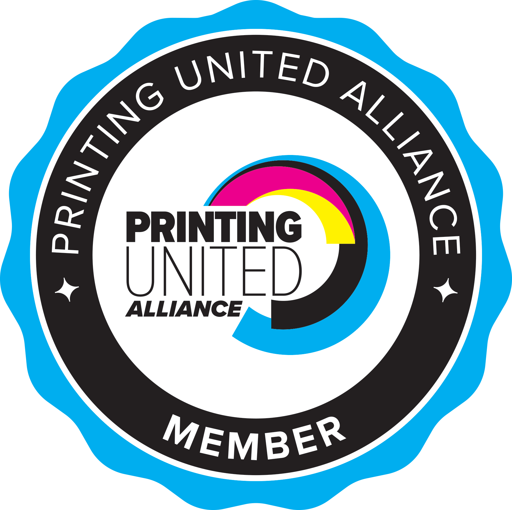
G7+™ is a global specification and certification program developed by PRINTING United Alliance to achieve visual consistency across print processes and technologies.
Learn More →Explore the full range of professional certifications offered by PRINTING United Alliance, covering color management, print production, and workflow standardization.
View Certifications →Authorized by PRINTING United Alliance®
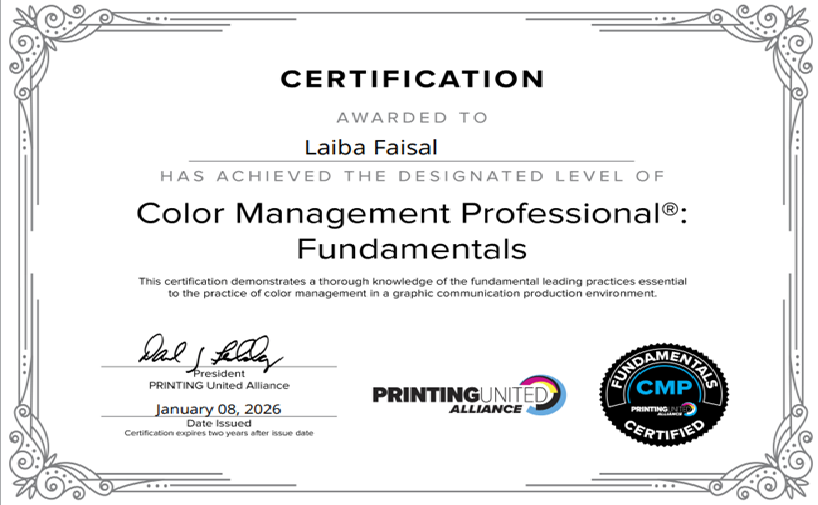
Explore industry-leading color measurement tools including our Color QA Software, Handheld wireless Spectrophotometers & Densitometers, and advanced In-Line Systems.
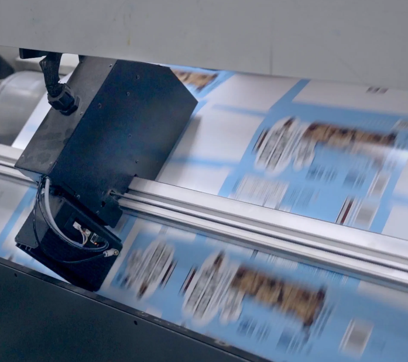
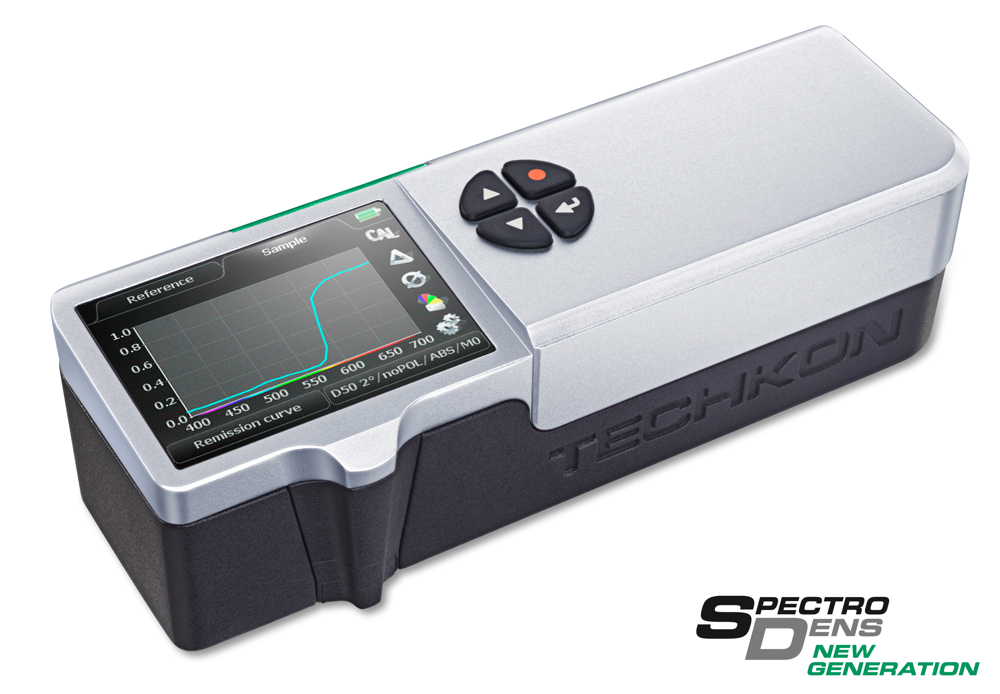
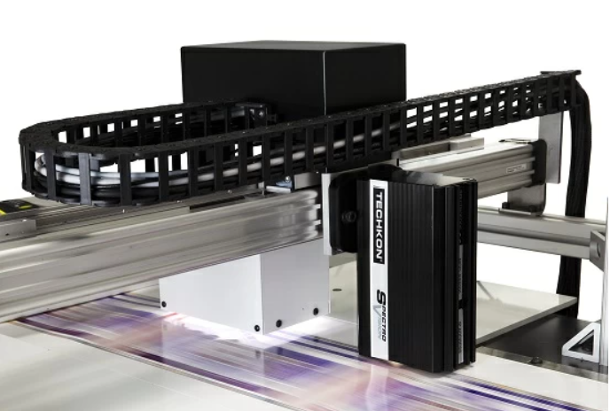
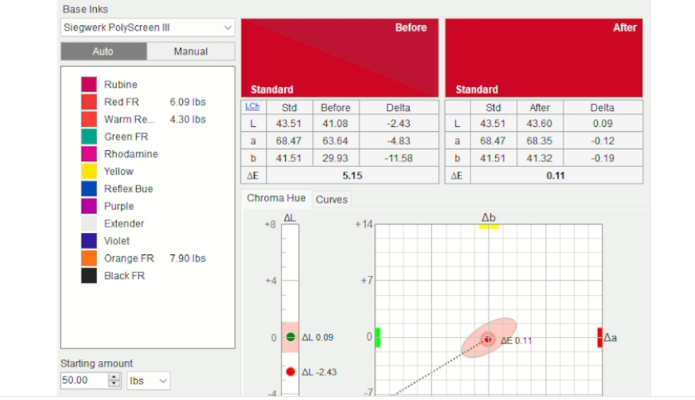
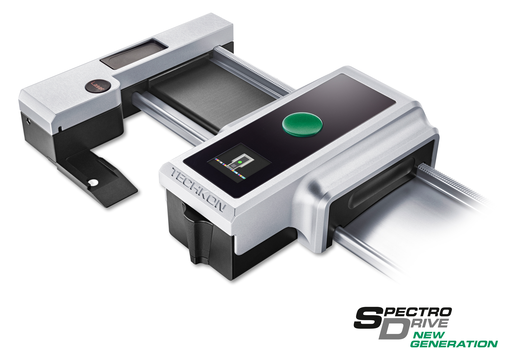
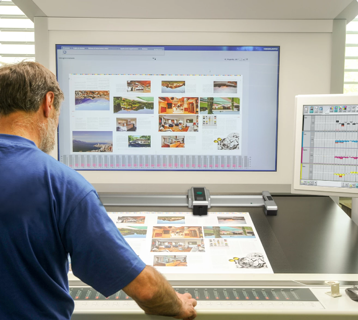
Measurement solutions implemented using Techkon® systems.
Handheld device combining spectrophotometer and densitometer for spot measurement and density control at press side. Essential for real-time verification during production runs.
In-line spectrophotometer for continuous measurement during production. Enables real-time color monitoring without stopping the press.
Software for color quality management, measurement, and reporting. Centralizes color data and supports standards-based workflows across your operation.
Scanning spectrophotometer for full-sheet measurement and color verification. Captures comprehensive spectral data across the entire sheet.
Closed-loop system for automated scanning and press adjustment. Measures, analyzes, and feeds corrections back to the press for consistent color.
Measurement solutions implemented using Techkon® systems.
Handheld measurement for ink room verification and batch control. Ensures ink formulations meet specifications before going to press.
Software for ink formulation and color management in the ink room. SmartInk integration streamlines recipe management and color matching.
Handheld densitometer for quick density measurement. Compact and reliable for routine ink room and press-side checks.
Ink formulation software for color matching and recipe management. Reduces waste and accelerates ink preparation with accurate spectral matching.
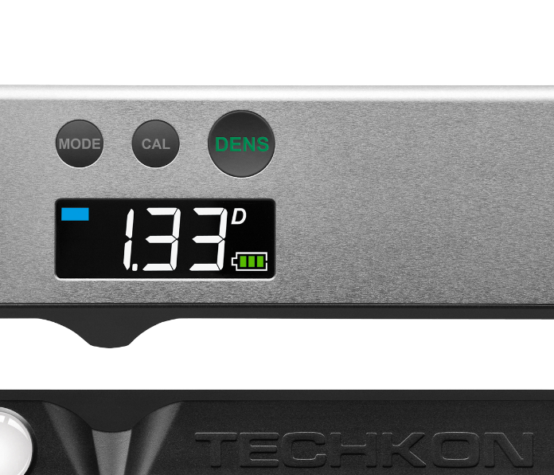
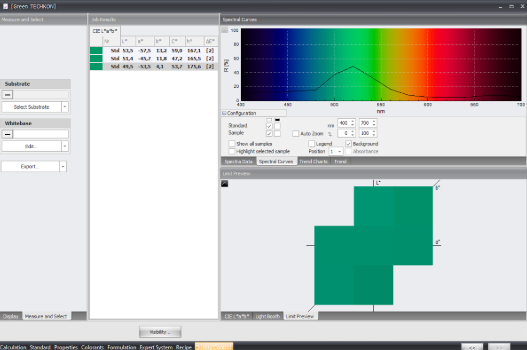
Measurement solutions implemented using Techkon® systems.
Portable spectrophotometer and densitometer for brand color verification at any point in the supply chain. Ideal for supplier audits and on-site checks.
Monitor and analyze color data across global production sites. Centralized dashboards and reporting for brand consistency worldwide.
Official Manufacturer Resources
Explore detailed specifications, calibration workflows, and product documentation directly from the official Techkon website.
Learn More on TechkonDatacolor provides advanced color management and calibration solutions used across printing, packaging, and industrial production to ensure consistent color accuracy.
We verify, measure, and control color using calibrated spectrophotometric systems and standardized workflows.
Our production environments are calibrated using spectrophotometer-based measurement to keep proof and press in tight alignment. Neutral gray calibration and standardized verification routines ensure every device and substrate tracks to the same visual aim.
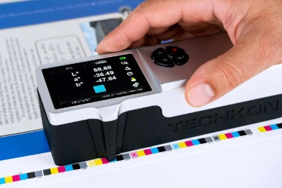
AdaSphere is a G7+™ Authorized Partner, approved by PRINTING United Alliance® to deliver G7 training programs.
Authorized by PRINTING United Alliance®
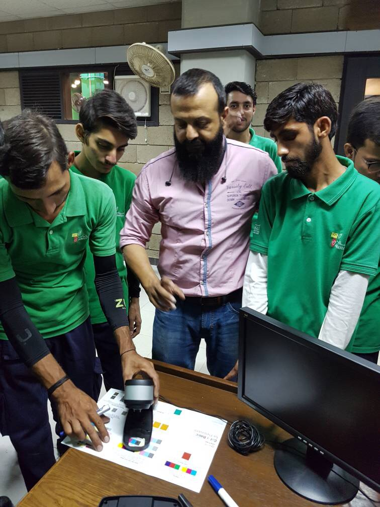
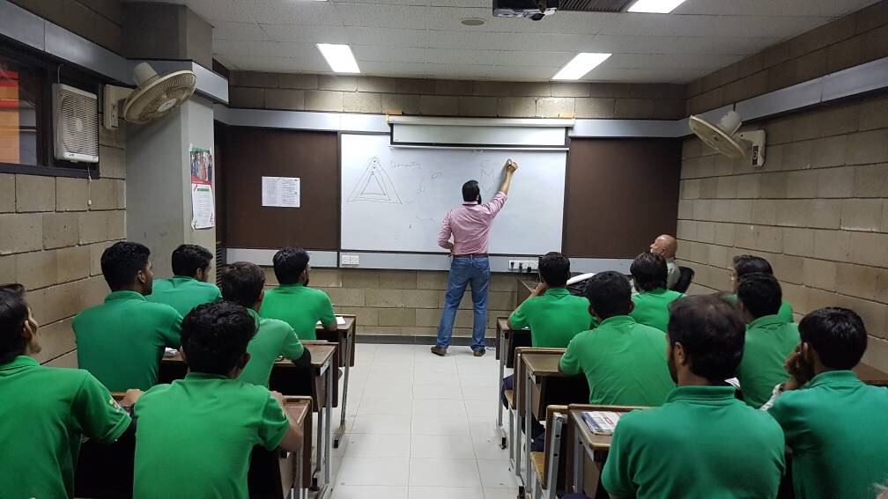
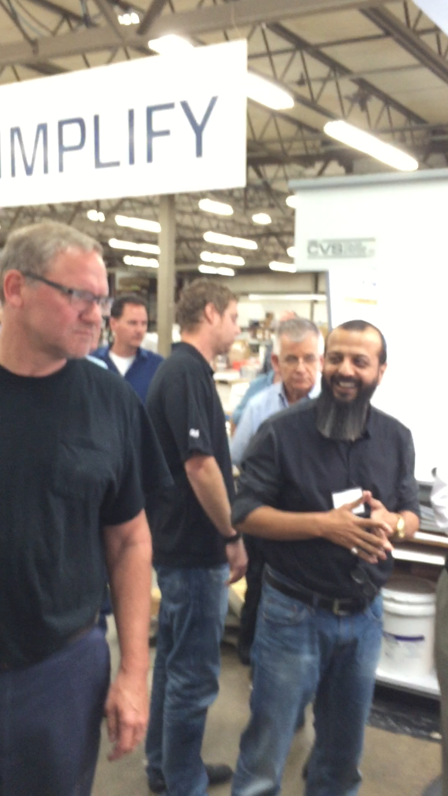
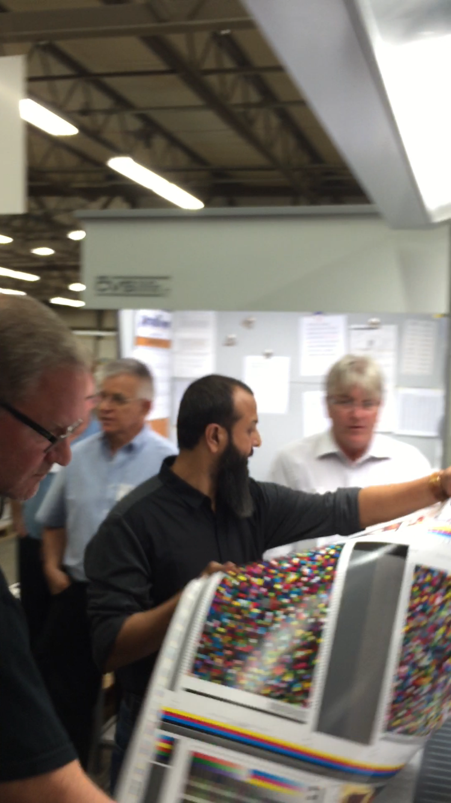
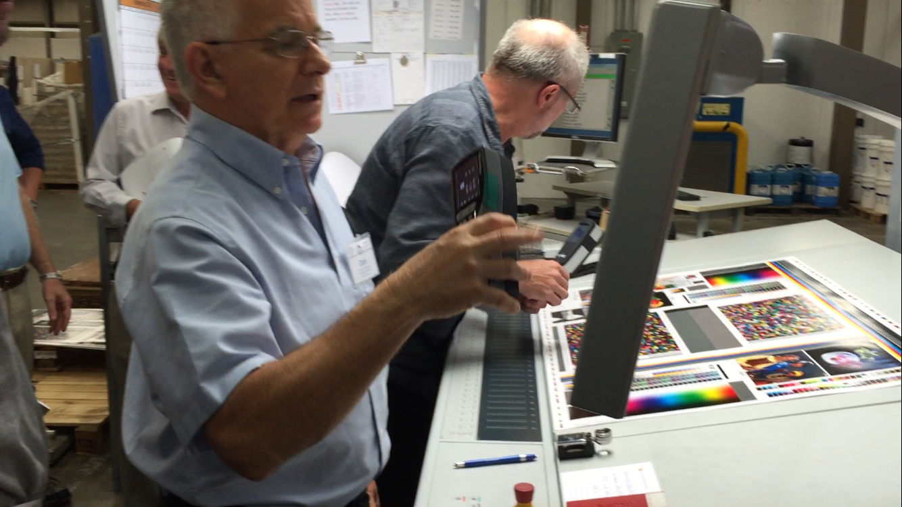
AdaSphere is a G7+™ Authorized Partner, approved by PRINTING United Alliance® to deliver G7 training programs for printing facilities, production teams, and packaging manufacturers.
Certification is issued by PRINTING United Alliance® upon successful completion.
Request TrainingA closer look at the standards, methodology, and instrumentation behind our production systems.
Understanding the methodology behind neutral gray balance and print standardization.
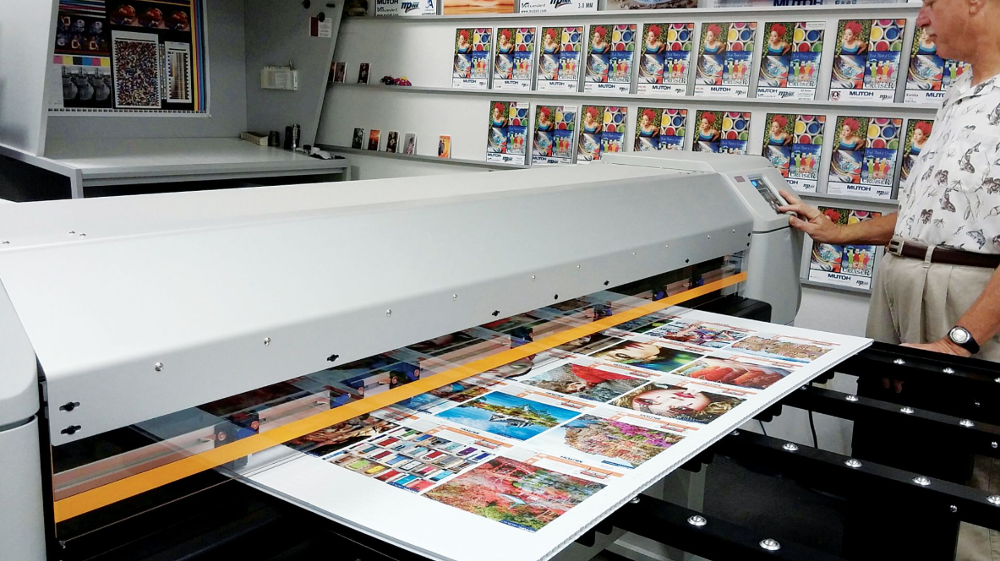
Applying G7 principles to scalable and large-format production workflows.
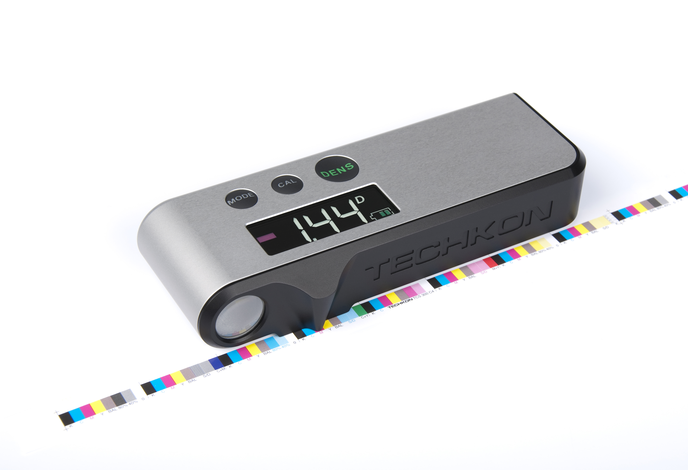
Real-time density and tone value measurement using certified spectrophotometry.
Focused expertise for sectors where accuracy, speed, and compliance are non-negotiable.
High-volume packaging with brand consistency and shelf impact.
Premium finishes and precise color for beauty and personal care.
Regulated labeling, leaflets, and cartons built for compliance.
Durable, information-dense labels for equipment and logistics.
Share your requirements and our team will provide a focused proposal for your packaging or printing needs.